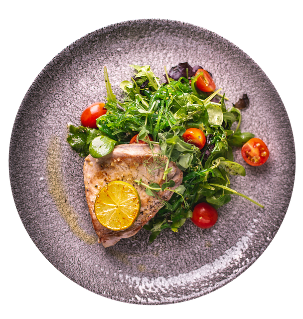

Veganer Thunfisch Salat

Image by Vicki Hamilton from Pixabay
Ich nutze es als Platzhalter
Beschreibung
Ein leichtes und leckeres Essen, eignet sich besonders für warme Tage.
Zutaten
- Gewürze
- Salz
- Pfeffer
- Olivenöl
- Balsamico Essig
- Senf Mittelscharf
- Anderes
- Salat
Romasalatherzen/Eisberg für Biss
Gemischter Wildkräutersalat für Geschmack
- Glass veganer Thunfisch
- Rote Zwiebeln
- Kirchtomaten
- Dose Mais
Vorgehen
- Die Salate waschen und etwas klein schneiden.
- Zwiebeln in halbe und viertel Ringe schneiden.
- Kirchtomaten halbieren
- Unsere trockenen Zutaten alle in eine große Schüssel geben.
- In einer extra Schale setzen wir das Dressing an.
Mische dafür einen Esslöffel Senf mit einem EL Öl und einem halben Balsamico.
Gebe Salz, Pfeffer und Zucker nach Geschmack
- Nun nurnoch das Dressing drüber geben und gut durchmischen.
Home